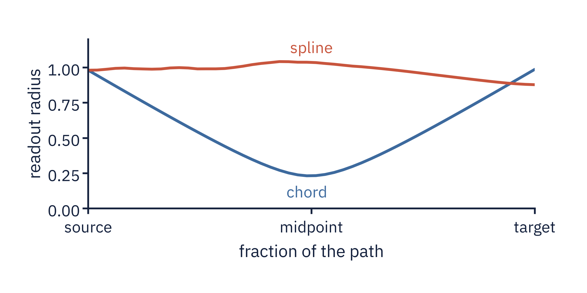

<section id="p2-radius" data-transition="fade" style="background:#FBFBF8; color:#14213D; font-family:'IBM Plex Sans', Arial, sans-serif; padding:128px 128px 160px; display:flex; flex-direction:column; gap:48px">
<h2 style="font-family:'Source Serif 4', Georgia, serif; font-size:56px; font-weight:600; line-height:1.1; letter-spacing:-0.5px; width:1600px">On held-out arcs, the spline stays on the ring</h2>
<div style="display:flex; gap:40px; align-items:center"><div style="width:1164px; background:#FFFFFF; border:1px solid #E4E2DC; border-radius:12px; padding:32px"></div><div style="flex:1; display:flex; flex-direction:column; gap:28px"><table style="width:480px; font-size:28px; color:#14213D"><tr><td style=" width:66%; color:#5B6472">arcs on the ring</td><td style=" width:34%; font-family:'Source Serif 4', Georgia, serif; font-weight:600; color:#C8553D; text-align:right">16 of 16</td></tr><tr><td style=" color:#5B6472">chord, midpoint radius</td><td style=" font-family:'Source Serif 4', Georgia, serif; font-weight:600; color:#14213D; text-align:right">0.23</td></tr></table><p style="font-size:32px; font-weight:600; line-height:1.3; color:#14213D">The chord leaves the ring mid-path.</p></div></div>
<p style="position:absolute; left:128px; bottom:64px; width:1664px; font-size:24px; color:#5B6472">B · Method</p>
<aside>~70 s. The design first. At a value the spline saw, the chord and the curve end at the same point, so an endpoint readout cannot tell linear from spline steering. At a held-out value the endpoints are a sagitta apart and the paths differ all the way along. So the main design holds out a contiguous 45-degree arc of 8 directions and steers into it, repeated at 16 arc positions (15 distinct arcs) at each of points 12 and 22. Scattered hold-out is run and labelled as unable to separate chord from arc; extrapolation is run and labelled as extrapolation. Three disjoint clip sets: 632 knot clips build the spline, 480 probe clips fit the evaluation probe and an MLP, 300 test clips are steered. Two readouts never built the edit: agreement with real clips at the target value, and an MLP on disjoint clips; the predictor's forecast is the downstream test. At the steered layer Goodfire's energy mostly restates the geometry the edit followed, so it is reported with that caveat. Both arms edit the same PCA-64 subspace and keep each clip's off-subspace residual. Controls: a dose-matched line, projected and reflected arms, 20 endpoint-matched random curves, 20 shuffled-centroid curves and a BF16 repeat. The verdict rule was frozen before the arc sweep and applied unchanged to all 32 runs. The result. The evaluation probe's readout radius along the path, for the largest shifts, 135 to 180 degrees, on the headline arc at block 12. The chord between the class means cuts across the ring's hollow middle and the readout radius collapses to about a quarter at the midpoint; the spline keeps it near one. Over the 16 arc positions the minimum radius is higher for the spline on every one, at both layers: plus 0.26 plus or minus 0.06 at point 12 and plus 0.28 plus or minus 0.05 at point 22 (labels angle on the four arcs where the label-free angle fails). A dose-matched line does not close the gap, and at a 70/30 split it is unchanged. The gap grows with the shift, from about zero below 30 degrees. Two qualifications. First, the hollow is a fact about the ring's plane: in the full 64-dimensional subspace the chord is as close to real clips as the spline. Agreement with real clips at the target, spline minus chord, is minus 0.02 plus or minus 0.06 over the 16 arcs at point 12, the spline ahead on 7 of 16, and plus 0.02 plus or minus 0.01 at point 22, ahead on 15 of 16 on the label-free angle; the plus 0.011 in earlier drafts was the headline arc alone. Second, readouts that did not build the edit, the MLP and the real-clip agreement, do not separate the two paths at the endpoint; the labels of the ten real clips nearest the path midpoint do, by 16 to 21 degrees and by 38 to 45 at large shifts. For speed and acceleration the spline adds nothing, as their straight geometry predicts.</aside>
</section>
